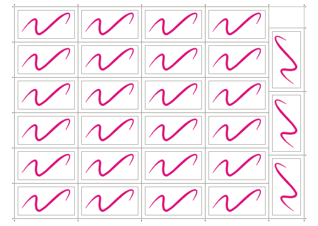

27 визиток на SR A3 за считанные секунды.
Эта заметка адресована тем, кто печатает много визиток на лазерных принтерах типа Xerox с использованием формата SR A3. Принтеры такого типа довольно широко используются в небольших предприятиях оперативной полиграфии.
Визитки – такой товар, который обычно заказывают небольшими тиражами, чаще всего по 100 шт.
Если сделать раскладку визиток размером 90 х 50 мм (без цветного фона или с однородным цветным фоном) на листе формата SR A3 (450 х 320 мм) обычным способом, т.е. с использованием стандартных средств макетирования в окне «Предварительный просмотр», то можно разместить на листе блок из 24 визиток (4 х 6). На четырёх листах мы получим 96 штук. И что же, из-за недостающих четырёх штук тратить ещё целый лист?
Если повернуть визитку на 90 град., то рядом с блоком из 24 шт. можно пристроить ещё 3 визитки. Таким образом на листе уже помещается 27 шт., и требуемый тираж в 100 шт. уже можно напечатать на 4 листах. Правда, при этом уже нельзя использовать стандартные средства макетирования с автоматической расстановкой меток реза.
Я уже давно пользуюсь таким способом, который позволяет и бумагу сэкономить и получить раскладку в считанные секунды.
Суть его в том, что раскладка создаётся не на чистом листе, а на заранее созданном шаблоне, на котором собственно располагаются габаритный прямоугольник размером 410 х 300 мм и метки реза. Абрис прямоугольника без цвета. Его назначение в том, чтобы точно позиционировать первую визитку с помощью окна «Выровнять и распределить». Затем надо сделать раскладку вручную, создавая необходимые дубли с помощью окна «Преобразование». Затем необходимо нарисовать метки реза в отдельном слое, который сделать потом нередактируемым. Удалите визитки. Шаблон сохраните.
Шаблон раскладки может также содержать и заготовку будущей визитки (прямоугольник соответствующий обрезному формату 90 х 50 и концентричный ему прямоуголик поменьше, обозначающий поля. После создания визитки обоим прямоугольникам задают абрис без цвета.
После того, как визитка готова и утверждена делается раскладка с помощью заранее записанного макроса. На запуск макроса уходят считанные секунды, а саму раскладку макрос делает за секунду.
Если Вы ещё не не имели дела с макросами, то попробуйте записать макрос самостоятельно.
Выбирете: Инструменты – Макросы – Начать запись.
В открывшемся окне «Сохранить макрос» выбирете GlobalMacros.
Аккуратно выполните все действия по созданию раскладки, используя окна «Выровнять и распределить» и «Преобразование» (Alt + F7).
Остановите запись макроса.

При запуске макроса следите, чтобы был активным слой, в котором находятся визитка и габаритный прямоугольник.
Специально для CDRPRO.RU.
Первый пошёл... :)
Небольшое пояснение к акции: не обязательно выписывать какие то хитрые моменты, можно просто взять любой инструмент и описать все его возможности, предварительно можно проконсультироваться со справкой или какой то книгой. Важно что бы описание было настолько полным, на сколько это возможно.
Резчик после этого может сказать вам большой человеческий...посыл... резать не удобно.. особенно если визиток... порядка 1000 или больше.... а сели фон не однородный, где место под вылетку обрезную?
+1
Вот поэтому лучше ограничится описанием инструментов и функций. Либо делать советы как можно универсальней.
Lenivec,
Всегда найдутся желающие спорить, а точнее невнимательные.
В самом начале описано для какого случая этот способ.
Я же не спрашиваю совета: можно ли так сделать?
Я описываю свой опыт, а не теории.
Представьте и режу всё это без проблем. Конечно, несколько дополнительных резов.
Тут уж Вам решать, что дороже: покой резчика или выброшенная бумага.
Если я расскажу, как резать, Lenivec возразит что-нибудь ещё.
Если расскажу как делаю раскладку для визиток с фоном и вылетами за обрез, Lenivec возразит что-нибудь ещё.
Конечно всем подойти не может. Или другое оборудование, или другой тираж, или вообще не на бумаге требуется. Но если послушать Lenivec-а, может быть надо перейти на технологию, которую он предложит?
Следствием прочтения данного топика, появился новый о наболевшем...
Покой резчика дороже, коллектив на то и есть коллектив, чтоб по возможности облегчить друг-другу работу!
Solowejka, теперь представь, напечатал какой-то срочный заказ а метки забыл поставить (или слишком тонкие вышли, или зону на вылет не учел) бывает!
Обычно резчик всегда выручает, а представь, после этого будет посылать перепечатывать!
На мой взгляд есть более удобный и быстрый способ формирования раскладки для визиток. Без макросов и лишних движений мышкой. Сначала вы формируете шаблон с метками под обрезку. Потом рисуете прямоугольник под размер визитки (90 х 50) и размещаете его в левом верхнем углу в соответствии с метками обрезки. После этого прямоугольник делаете символом (через Symbol Manager) и клонируете столько раз, сколько разместится у вас на листе (В данном примере 10 штук). Сохраняете файл, шаблон готов.
Эту процедуру следует проделать однажды и в дальнейшем пользоваться следующей схемой действий:
(1) Из другого документа копируете визитку в буфер обмена. Переходите на документ с шаблоном (2) и с зажатым CTRL-ом "кликаете" любой из шаблонных прямоугольников. Таким образом вы входите в режим редактирования символа.
3) Нажимаем CTRL-A и все удаляем. (4) Далее вставляем из буфера (CTRL-V) вашу визитку и удаляем окаймляющий прямоугольник в самой визитке, если он есть. (5) Еще раз "кликаем" на пустом месте с зажатым CTRL-ом (или нажимаем слева внизу кнопку Finish Editing Object). Любуемся результатом :)
Shark
Для описанного Вами случая не нужно даже ни символ создавать, ни шаблон.
Просто визитка рисуется на формате 90 Х 50 мм, а раскладка создаётся виртуальная в окне "Предварительный просмотр" с автоматической простановкой меток реза.
И потом, формат А4 - это не то же самое, что SR A3.
Solowejka
Полностью с вами согласен, просто для вашего конретного случая можно обойтись без макроса, заранее раскидав клоны "символа" как у вас на схеме, потом редактируете один "символ" и все ваши визитки расположатся в точности как у вас на рисунке
Страницы